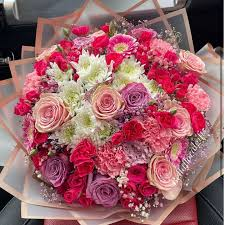

|  | FAVO ICONIC! |
A warm WELCOME! to FAVO ICONIC! its a pleasure welcome from our side to service you with the beautiful flower bouquet with afforadle price to coustomize your need and expectation In suprising and greeting your loved one it gives us a immensive happinness to be a part..!
special produts......!
| MARIGOLD | SPECIAL REASON |
|---|---|
 |
Supramacy!Marigolds were often linked to the powerful strength of the sun and represent power, strength, and light that lives inside of a person. The marigold has also come to symbolize a feeling of despaired love.To place order click hear! |
| CARNATION | SPECIAL REASON |
|---|---|
 |
Loyalty!Carnations are also a symbol of devotion in the present and in years to come. Therefore, it's no surprise that they're the traditional flower for a first wedding anniversary. Since carnations symbolize commitment, they're also commonly used in wedding bouquets and boutonnieres.To place order click hear! |
| DAISY | SPECIAL REASON |
|---|---|
 |
Purity!With soft white petals, daisies represent purity. Furthermore, daisies often bring up the image of children picking wildflower bouquets in an open field. Today, daisies are tossed by wedding flower girls to symbolize love's purityTo place order click hear! |
| JASMINE | SPECIAL REASON |  |
Divinity!Revered for their purity and beauty, jasmine blossoms often symbolise love, sensuality, and grace. In many cultures, the delicate white flowers hold religious connotations, signifying purity and the divine.To place order click hear! |
|---|
| RED ROSE | SPECIAL REASON |
|---|---|
 |
Love!A red rose is a gift primarily given to a love interest, symbolizing a marital or romantic relationship. Wedding bouquets often include white roses, symbolizing virtue. Red is traditionally seen as a symbol of passion, while white is a symbol of purity and innocenceTo place order click hear! |
| LILY | SPECIAL REASON |
|---|---|
 |
Supernatural!But the most common meaning is purity and fertility. The sweet and innocent beauty of the lily flower has given it the association of fresh life and rebirth. Although the meaning can differ depending on its colour.To place order click hear! |
| online orders contact: 0442 8765 345 |
Adress:Coonoor,The Nilgiris location |
follow us in instagram @dharz favo iconic |